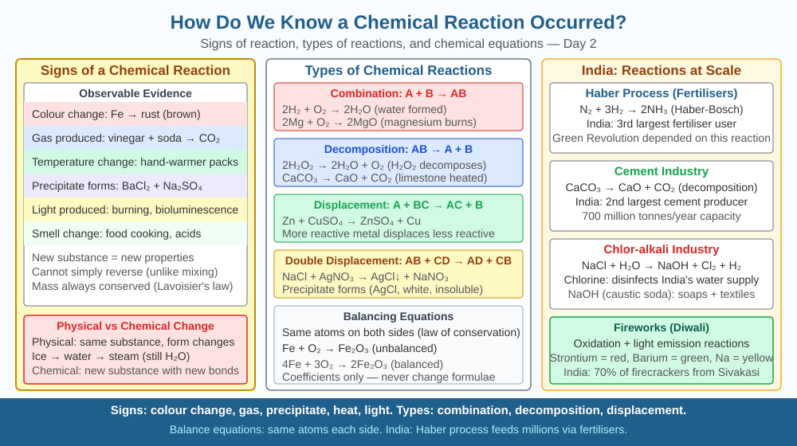

By the end of this lesson, you should be able to identify the five observable signs of a chemical reaction, explain why each sign indicates a new substance has formed, and predict how removing heat affects the signs produced by an exothermic reaction.
You squeeze lemon juice onto a piece of cut apple and the flesh stays white for longer. You mix baking soda and vinegar and the mixture fizzes violently. You leave an iron nail in a wet cloth overnight and it turns red-brown. In each case something clearly changed — but how do you know it was actually a new substance that formed, rather than just the same substances rearranging? What tells a scientist that a chemical reaction has occurred, and not just a physical change?
A chemical reaction is a process in which one or more substances (the reactants) are converted into one or more different substances (the products) with different chemical properties. The key word is different — the products have a different arrangement of atoms, different bonds, and therefore different properties from the reactants.
A physical change — like dissolving sugar in water or melting ice — does not produce a new substance. The sugar molecules are still sugar; they are simply dispersed. You can recover the original substance by reversing the process.
Scientists use five observable signs to indicate that a chemical reaction has likely occurred. Each sign points to the formation of a new substance:
Sign 1 — Evolution of a gas (effervescence). When vinegar (acetic acid, CH₃COOH) reacts with baking soda (sodium bicarbonate, NaHCO₃), carbon dioxide gas is produced: CH₃COOH + NaHCO₃ → CH₃COONa + H₂O + CO₂↑. The fizzing (effervescence) signals a new gaseous product that was not present before. Gas evolution is strong evidence of a reaction because gases are distinct chemical entities that escape from the system.
Sign 2 — Change in colour. When iron (Fe) reacts with oxygen and water, iron(III) oxide (Fe₂O₃·xH₂O) — commonly called rust — forms. Its reddish-brown colour is fundamentally different from silvery iron metal. The colour change is not cosmetic; it reflects a completely different set of chemical bonds and electronic structure in the product.
Sign 3 — Formation of a precipitate. When solutions of lead(II) nitrate (Pb(NO₃)₂) and potassium iodide (KI) are mixed, a bright yellow solid — lead(II) iodide (PbI₂) — immediately forms and sinks: Pb(NO₃)₂ + 2KI → PbI₂↓ + 2KNO₃. The solid precipitate cannot be explained by either starting solution — it is a new, insoluble substance.
Sign 4 — Change in temperature (exothermic or endothermic). An exothermic reaction releases heat energy — for example, burning magnesium in oxygen (2Mg + O₂ → 2MgO) releases so much energy that it produces a blinding white flame. An endothermic reaction absorbs heat — dissolving ammonium nitrate (NH₄NO₃) in water cools the solution measurably. Temperature change indicates that bonds in the reactants have broken and new, more (or less) stable bonds have formed in the products, releasing or absorbing the energy difference.
Sign 5 — Change in smell (production of a new odour). When ethanol reacts with acetic acid in the presence of an acid catalyst, ethyl acetate (an ester) is produced — recognisable by its sweet, fruity smell that neither ethanol nor acetic acid alone possesses. New odour = new volatile compound = new substance formed.
Critically, a single sign alone can sometimes be misleading — water boiling produces gas (steam) but is purely physical. Scientists therefore look for multiple signs together, or use confirmatory tests: a glowing splint reigniting confirms O₂; a burning splint extinguishing with a pop confirms H₂; a lime water turning milky confirms CO₂.
Think of it as a checklist for detective work:
The more signs you observe simultaneously, the more certain you are that a new substance — not just a physical rearrangement — has formed. The underlying principle: a reaction occurs when atoms rearrange into lower-energy or more stable configurations, always conserving mass (Law of Conservation of Mass).
The included SVG shows five parallel columns, each representing one observable sign:

These five signs appear constantly in Indian daily life:
Q3 asked what happens to observable signs when heat is removed from an exothermic reaction — the rate slows and the temperature rise becomes smaller. Now extend further:
Some reactions are reversible. In the reaction: N₂ + 3H₂ ⇌ 2NH₃ + heat (the Haber process for making ammonia fertiliser used across India), the forward reaction is exothermic. If you start the reaction and then suddenly absorb all the heat produced (cooling the system), the forward rate slows — consistent with Q3's prediction. But cooling also shifts the equilibrium: Le Chatelier's principle states the system adjusts to counteract the change. A lower temperature favours the exothermic (forward) direction, increasing NH₃ yield — but it also slows the rate.
Predict: At very low temperatures, which sign of reaction would disappear first — the temperature change or the colour change of any indicator present? Use the rate argument to reason why one sign fades before the other.
Which observation is a reliable sign that a chemical reaction has occurred?
Correct answer: b
Why does identifying the mechanism of a reaction matter more than memorising the result?
Correct answer: b
What would happen to observable signs of reaction if you removed heat from an exothermic reaction?
Correct answer: a
Explain today's concept to a younger student in 60 seconds without technical jargon. Then explain it again using the correct scientific vocabulary.
If both explanations describe the same mechanism, you have understood the concept rather than memorised it.
The Law of Conservation of Mass was established by Antoine Lavoisier in 1789 by carefully weighing reactants and products in sealed containers. He showed that in any chemical reaction, the total mass of products exactly equals the total mass of reactants — not one atom is created or destroyed. This seems obvious now, but before Lavoisier, scientists genuinely believed burning wood "lost" mass because phlogiston (a fictional substance) escaped. The five observable signs tell you a reaction happened; conservation of mass tells you the atoms simply rearranged.
A chemical reaction is confirmed when one or more of five observable signs appear — gas evolution, colour change, precipitate formation, temperature change, or new odour — because each sign indicates a new substance with different properties has formed from the original reactants.